张泽民院士近年高分文章集锦（2020-2025）
原文：https://mp.weixin.qq.com/s?__biz=MzAwMzIzOTk5OQ==&mid=2247534016&idx=1&sn=7202c83e5e2f24a25736ca5ebcc4e3bd&chksm=9b3c3c90ac4bb586af1845abfb13385ebcfb13dec229e649b5ae55e4d8780eba498bafc91b40#rd 合集：文献速递
一、写在前面
众所周知，张院士("单细胞院士")是生信领域yyds之一，一手引领了业内科研思路与工具算法（例如跟着《Nature》和《Cell》学Ro/e分析）。文整理了张老师近几年的高分文章集锦，当然张老师的作品远不止这么些，感兴趣的同学可以在评论区交流你关注的文章。
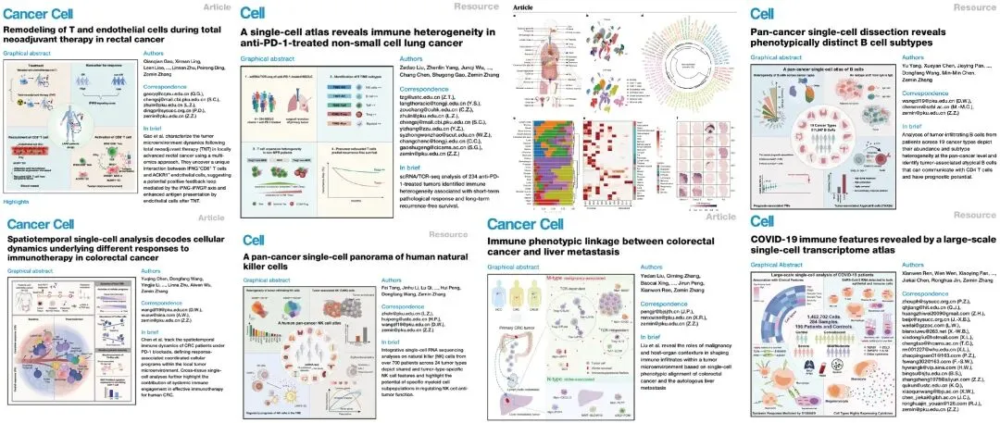
** **
专家介绍：
张泽民，1988年毕业于南开大学生物系, 获学士学位。1995年毕业于美国宾夕法尼亚州立大学，获博士学位。1995—1998年在美国旧金山加州大学霍华德·休斯医学研究所进行博士后研究工作。1998年起在美国罗氏制药基因泰克科研部工作，任生物信息资深科学家、首席科学家。2014年起担任北大-清华生命科学联合中心高级研究员，北京大学生命科学学院讲席教授，北京大学生物医学前沿创新中心研究员、副主任、主任。2023年当选中国科学院院士。2024年入选中国医学科学院学术咨询委员会学部委员。2025年1月任重庆医科大学校长。 更多单细胞/空转相关内容分享可见：82h视频教程《Python版scRNA-seq分析全流程》100个小时沉浸式学会scRNA-seq数据分析69h空转视频！从 “零基础”到“复现《Nature Genetics》代码”
二、主要内容
一、题目：Cross-tissue multicellular coordination and its rewiring in cancer
IF：48.5
期刊：Nature
发表日期：2025.05
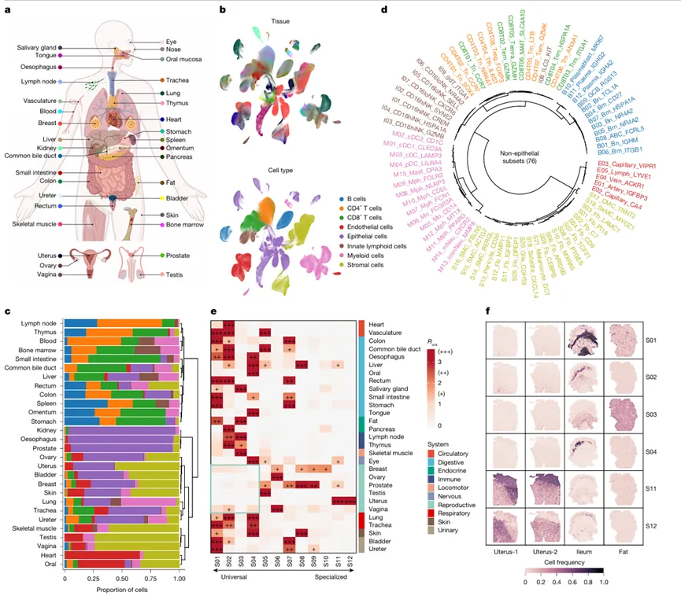
该研究聚焦于组织层面的多细胞协同模式，提出了“跨组织细胞模块（cellular module，CM）”的科学概念，并建立了识别细胞模块的计算框架CoVarNet。研究整合大规模单细胞转录组公共数据，系统识别出12个跨组织细胞模块，并深入剖析其时空动态特征、内部调控关系、功能表型关联以及在肿瘤进展过程中的动态重塑过程。这一成果为多细胞协同机制的研究提供了新的理论框架和分析工具，有助于深化我们对组织稳态与复杂疾病网络机制的理解。
二、题目：Remodeling of T and endothelial cells during total neoadjuvant therapy in rectal cancer
IF：44.5
期刊：Cancer Cell
发表日期：2025.11
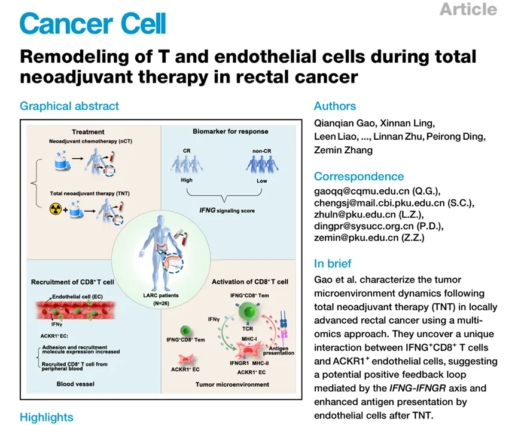
该研究使用scRNA-seq、scTCR-seq和空间转录组测序，表征了不同新辅助治疗诱导肿瘤微环境(TME)变化。新辅助治疗（TNT）与调节性T细胞减少和高IFNG表达的IFNG+CD8+效应记忆T细胞增加相关，可能有助于提高完全缓解率。肿瘤浸润性CD8 + T细胞丰度与TNT后ACKR1+内皮细胞亚群的富集相关。进一步证实，内皮细胞在受到可能由CD8 + T细胞释放的IFNγ刺激时，获得了增强的呈递抗原和激活CD8 + T细胞的能力，揭示了TNT后活化的CD8+ T细胞和内皮细胞之间独特的相互作用。
三、题目：SARDH in the 1-C metabolism sculpts the T-cell fate and serves as a potential cancer therapeutic target
IF：19.8
期刊：Cell Mol Immunol
发表日期：2025.11
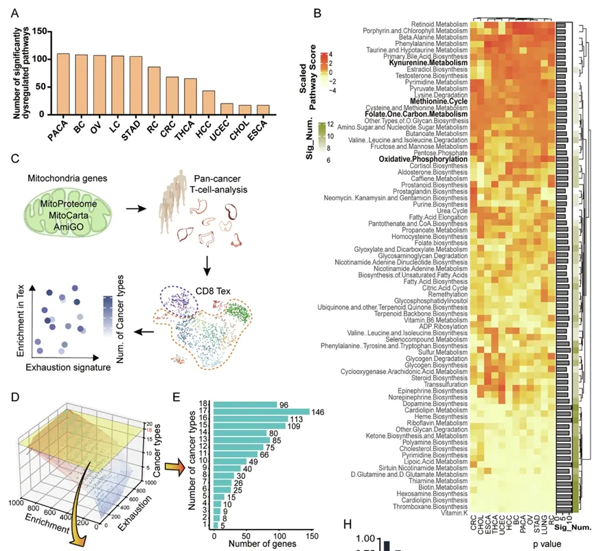
研究团队构建了从计算筛选到临床前验证的全链条研究范式：首先基于跨18种癌症的21.5万个T细胞单细胞图谱，开发了针对线粒体代谢基因的三步筛选算法——通过泛癌普适性、细胞特异性和功能相关性锁定关键靶点SARDH。随后采用RNA干扰和CRISPR技术，在体外人类T细胞及基因编辑小鼠模型中验证SARDH功能，系统评估其对T细胞活化（CD69）、增殖（CFSE染色）、迁移、细胞因子分泌（IFN-γ/TNF-α）及肿瘤杀伤（TCR-T共培养）的影响。
四、题目： A single-cell atlas reveals immune heterogeneity in anti-PD-1-treated non-small cell lung cancer
IF：42.5
期刊：Cell
发表日期：2025.05
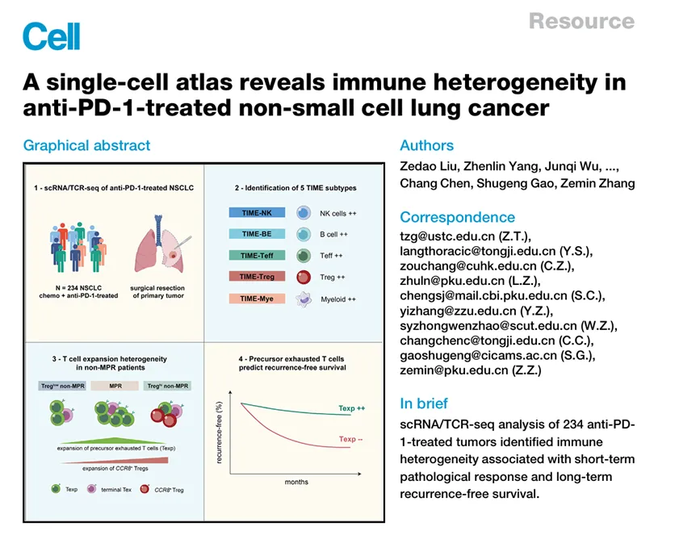
非小细胞肺癌（NSCLC）是全球癌症相关死亡的主要原因之一，抗 PD-1 联合化疗为其标准治疗方案，但患者响应存在显著异质性，肿瘤免疫微环境（TIME）差异是核心影响因素却缺乏系统解析。此研究借助单细胞 RNA 测序（scRNA-seq）与 T 细胞受体测序（scTCR-seq）技术，构建了 234 例抗 PD-1 治疗后 NSCLC 患者的肿瘤浸润免疫细胞图谱，首次系统定义 5 种 TIME 亚型并关联治疗响应与无复发生存期，为 NSCLC 患者分层治疗与预后评估提供了关键免疫标志物及机制依据。
五、题目：Integrated single-cell and spatial transcriptomics uncover distinct cellular subtypes involved in neural invasion in pancreatic cancer
IF：44.5
期刊：Cancer cell
发表日期：2025.09
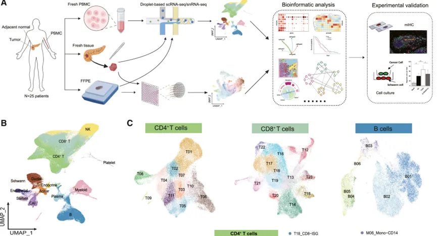
该研究整合了单细胞/细胞核RNA测序与空间转录组学，对来自25例PDAC患者的62个样本进行了高精度解析，首次在空间原位绘制了神经侵袭的细胞图谱，并鉴定出一个位于侵袭前沿、由TGF-β信号诱导的全新Schwann细胞亚型，揭示了其促进癌细胞迁移的关键作用，为理解及靶向胰腺癌神经侵袭提供了全新的视角与靶点。
六、题目：Pan-cancer single-cell dissection reveals phenotypically distinct B cell subtypes
IF：42.5
期刊：Cell
发表日期：2024.04
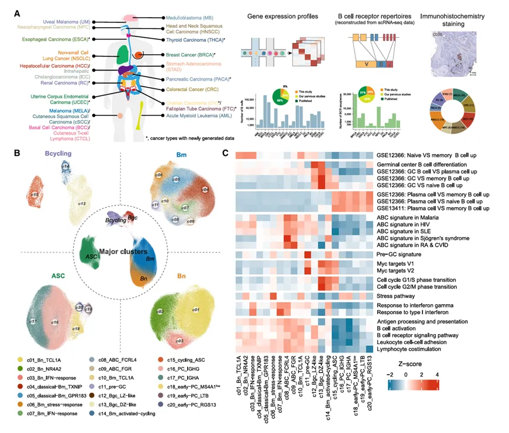
该研究通过单细胞RNA测序（scRNA-seq）、B细胞受体（BCR）谱系重构、多重免疫组化（mIHC）及单细胞ATAC-seq等技术，整合19种癌症类型、649例患者的单细胞数据。首次构建泛癌水平肿瘤浸润 B 细胞（TIBs）单细胞图谱，明确其亚型分类、功能特征及临床关联，为肿瘤免疫治疗靶点开发与预后评估提供新依据，填补了 B 细胞在泛癌免疫微环境研究中的空白。
七、题目：Spatiotemporal single-cell analysis decodes cellular dynamics underlying different responses to immunotherapy in colorectal cancer
IF：44.5
期刊：Cancer cell
发表日期：2024.06
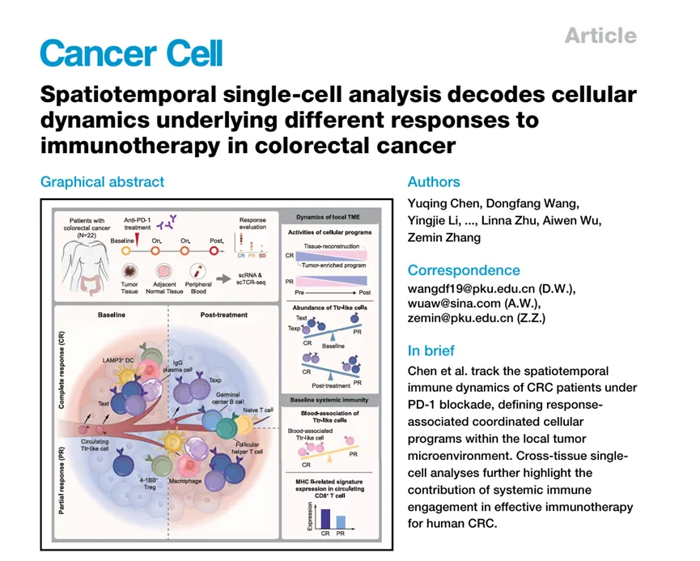
研究分析了22名接受PD-1阻断治疗的结直肠癌患者的多时点单细胞样本，揭示了局部及全身免疫动态。耗竭型T细胞（Tex）和肿瘤反应性CD8 T细胞（Ttr样）与治疗效果密切相关，且Tex细胞在治疗后与多种肿瘤相关细胞比例变化显著。血液相关的Ttr样细胞表现出较低耗竭状态，其丰度越高预示疗效越好。基线循环CD8 T细胞中更高的MHC II特征亦与良好反应相关。研究为结直肠癌PD-1阻断的时空免疫细胞动态提供了重要见解。
八、题目：A pan-cancer single-cell panorama of human natural killer cells
IF：42.5
期刊：Cell
发表日期：2023.09
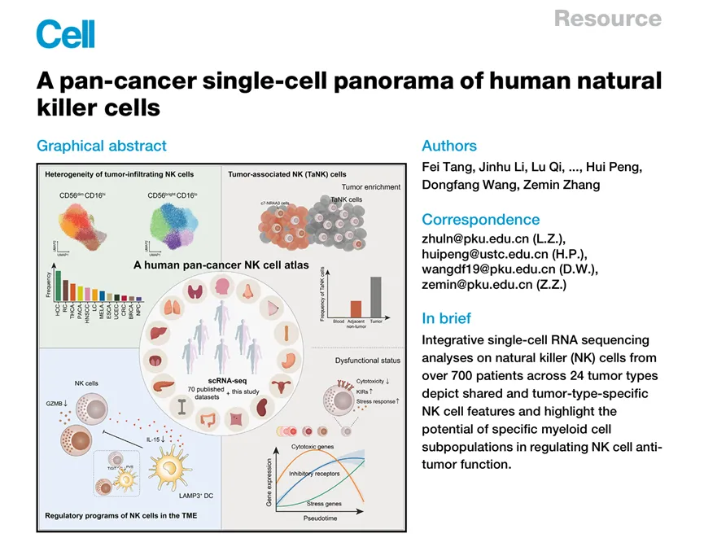
研究整合了来自716名癌症患者和47名健康对照的1223个样本的单细胞RNA测序数据，覆盖24种癌症类型，包括肺癌、乳腺癌、肝癌、胃癌等。通过无监督聚类、伪时间推断、细胞间相互作用分析等技术，系统解析NK细胞的亚群结构、转录特征及功能状态。文章从泛癌角度阐明NK细胞对肿瘤微环境中的表型和功能作用，还构建了一个全面的肿瘤浸润性人类NK细胞的相关图谱。基于大规模的 scRNA-seq 数据，分别探索了两个子集，结果表明，肿瘤浸润 NK 细胞的功能可能通过抗体依赖性细胞毒性影响抗体药物的临床疗效。此研究还鉴定出一组肿瘤相关 NK 细胞，它们在肿瘤中富集，表现出抗肿瘤功能受损，并且与不良预后和免疫治疗耐药性相关。提供了对基于 NK 细胞的癌症免疫的见解，并强调了 NK 细胞亚群作为治疗靶点的潜在临床用途。
九、题目：Immune phenotypic linkage between colorectal cancer and liver metastasis
IF：44.5
期刊：Cancer cell
发表日期：2022.04
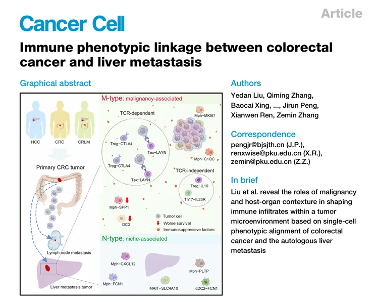
肿瘤微环境（TME）的各种免疫细胞类型会影响肿瘤细胞的进展和转移，但先前的研究尚不清楚肿瘤细胞和宿主器官是如何影响TME内免疫细胞的组成。此研究中作者巧妙地通过单细胞转录组测序分析原发癌和转移癌的肿瘤微环境数据的表型关联，利用单细胞转录组数据对CRLM、CRC、HCC样本进行免疫特征描绘，通过PhenoAligner方法识别多种与肿瘤进展或转移相关的关键性免疫细胞。揭示了TME、肿瘤类型和宿主器官之间复杂的相互作用。
十、题目：Single-cell meta-analyses reveal responses of tumor-reactive CXCL13+ T cells to immune-checkpoint blockade
IF：28.5
期刊：Nature Cancer
发表日期：2022.09
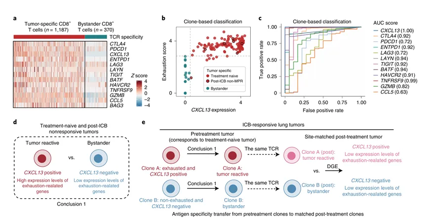
该研究通过对公共数据集的分析，提出了基于 CXCL13 表达水平识别免疫检查点阻断（ICB）治疗前后肿瘤微环境中肿瘤抗原特异 T 细胞的方法，鉴定了肿瘤特异 CD8 T 细胞的不同分化状态及其特征，并从多癌种水平揭示了免疫检查点阻断（ICB）在细胞层面上的作用机制。
十一、题目：Pan-cancer single-cell landscape of tumor-infiltrating T cells
IF：45.8
期刊：Science
发表日期：2021.12
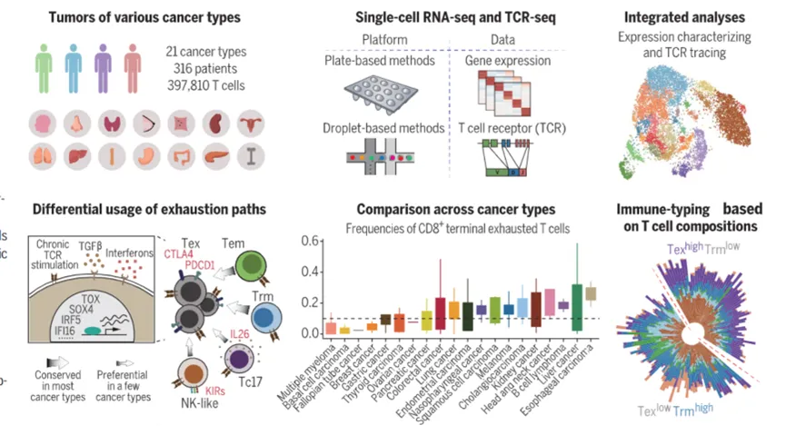
作者整合了21种癌症类型、316名患者的单细胞RNA测序数据（共397,810个T细胞），结合T细胞受体（TCR）测序数据，构建了泛癌T细胞图谱。通过轨迹分析、转录调控推断等方法，揭示了T细胞从初始状态到耗竭状态的动态演变路径，并鉴定出多个与肿瘤反应相关的T细胞亚群。发现了CD8+T细胞耗竭存在两条主要路径，分别通过效应记忆T细胞（TEM）和组织驻留记忆T细胞（TRM）发展为终末耗竭状态。不同癌症类型对这两条路径的偏好不同，部分癌症还存在额外的耗竭路径。并鉴定出多个潜在肿瘤反应性T细胞亚群，包括TFH/TH1细胞、TNFRSF9+Treg细胞、CD8+ISG+T细胞等，这些亚群在不同癌症中的频率和功能存在差异。该研究为泛癌T细胞免疫治疗提供了新的靶点和患者分层策略，例如通过监测T细胞亚群频率预测免疫治疗疗效，或针对特定T细胞亚群开发新型免疫疗法。研究数据和分析工具已公开，为后续研究提供了重要资源。
十二、题目：Cross-tissue human fibroblast atlas reveals myofibroblast subtypes with distinct roles in immune modulation
IF：45.8
期刊：Cancer cell
发表日期：2024.10
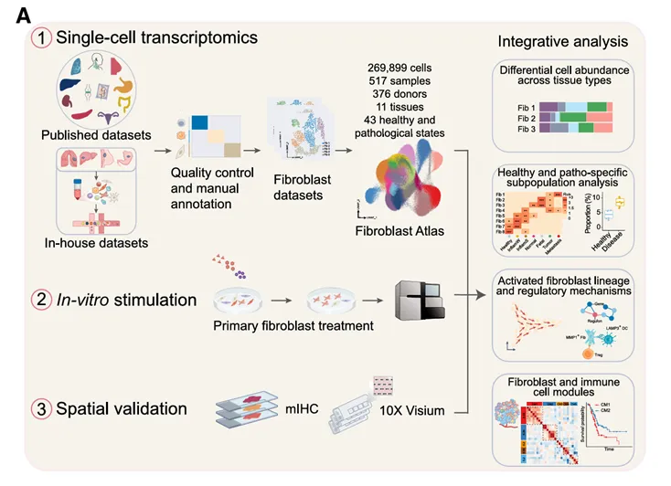
此研究对来自 517 个人类样本的成纤维细胞进行了全面的scRNA-seq，涵盖 11 种组织类型和不同的病理状态，确定了具有普遍和组织特异性特征的不同成纤维细胞亚群。病理状况导致成纤维细胞组成发生重大变化，包括炎症期间免疫调节成纤维细胞的扩增和癌症中组织重塑成纤维细胞。在成纤维细胞类别中，确定了四个转录上不同的亚群，它们来自不同的发育起源，其中 LRRC15 +成纤维细胞表现出终末分化特征。LRRC15+和 MMP1+成纤维细胞都表现出促肿瘤潜力，有助于免疫排斥和免疫抑制肿瘤微环境 (TME)，而 PI16+成纤维细胞在相邻的非癌性区域中显示出潜在的抗肿瘤功能，成纤维细胞亚型组成定义了具有不同临床结果的患者亚型。
十三、题目：Pan-cancer integrative analyses dissect the remodeling of endothelial cells in human cancers
IF：17.1
期刊：Natl Sci Rev
发表日期：2024.07
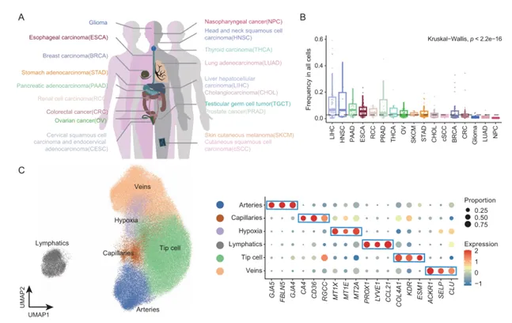
此研究整合了来自 19 种主要实体瘤、575 名患者的单细胞转录组数据，共获得近 15 万个高质量内皮细胞，系统性地构建了一个泛癌种肿瘤内皮细胞（tumor endothelial cells, TECs）图谱。通过分群分析，研究揭示了内皮细胞的主要亚群，包括动脉、静脉、毛细血管、淋巴管、缺氧相关细胞及血管“tip cells”，并进一步细分出多个具有特定标志基因的功能亚型。这些发现不仅加深了对 TEC 生物学的理解，也为优化抗血管治疗和联合免疫治疗提供了新的理论依据和潜在靶点。
十四、题目：Liver tumour immune microenvironment subtypes and neutrophil heterogeneity
IF：48.5
期刊：Nature
发表日期：2022.12
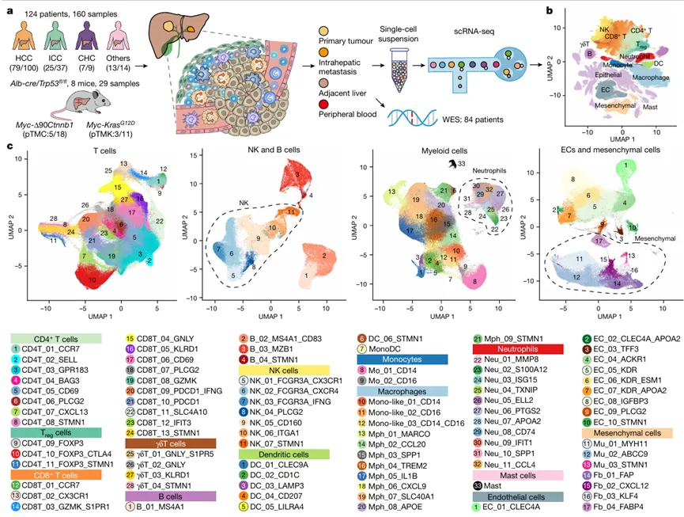
此研究首先通过scRNA-seq技术分析了来自人和小鼠肝癌的189个样本，建立了肝癌的大规模单细胞图谱，然后通过细胞模块分析、mIHC分析以及WES（外显子测序）分析揭示了五种免疫微环境亚型，发现富含髓样细胞亚型的肿瘤相关中性粒细胞 （TAN） 群体与不良预后相关；随后研究人员利用肿瘤细胞系构建 In vitro 培养体系，基于临床样本构建 Ex vivo 实验体系，基于小鼠肿瘤模型的 In vivo 实验体系并结合mIHC、CODEX技术全面揭示了TANs的异质性和促肿瘤表型；最后，在构建的中性粒细胞耗竭的小鼠肝癌模型中进一步证实了TANs的促肿瘤表型，确定了TANs靶标的潜在临床意义。
十五、题目：Immune phenotypic linkage between colorectal cancer and liver metastasis
IF：44.5
期刊：Cancer cell
发表日期：2022.04
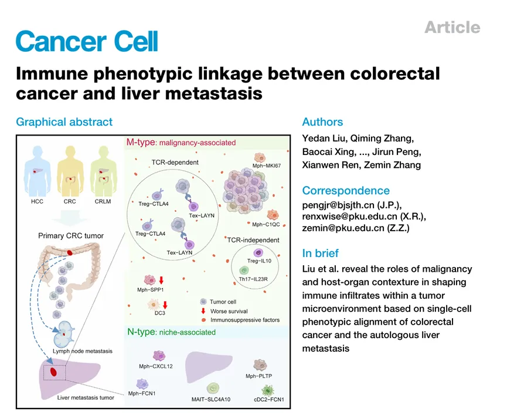
此研究收集51例未治疗的结直肠癌肝转移患者（CRC-LM）、原发性结直肠癌（CRC）和原发性肝细胞癌（HCC）患者的临床样本，涵盖原发肿瘤、转移灶、邻近组织及外周血。采用单细胞RNA测序（scRNA-seq）技术对免疫细胞进行转录组分析，识别免疫细胞亚群。开发“PhenoAligner”算法，基于K-近邻（K-NN）原理对齐不同组织的免疫细胞表型，量化癌细胞和宿主器官对免疫细胞的影响。揭示了结直肠癌肝转移中免疫微环境的复杂性，为靶向特定免疫细胞亚群（如SPP1+ TAM、DC3）的免疫治疗提供了理论依据，也为个性化治疗策略的制定奠定了基础。
十六、题目：Single-cell analyses reveal key immune cell subsets associated with response to PD-L1 blockade in triple-negative breast cancer
IF：44.5
期刊：Cancer cell
发表日期：2021.12
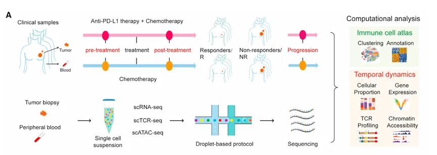
此研究中作者利用单细胞转录组测序（scRNA-seq）、单细胞T细胞受体序列测序（scTCR-seq）和单细胞染色质可及性测序（scATAC-seq）等技术，对治疗前后的 TNBC 患者的免疫细胞进行了解析，阐明了免疫细胞在不同治疗方案前后的动态变化。该研究确定了PD-L1抑制剂的反应性免疫细胞亚型，还发现紫杉醇治疗会削弱PD-L1抑制剂引起的应答型免疫细胞的扩增，为TNBC的免疫治疗和精准治疗提供了新的见解。
十七、题目：COVID-19 immune features revealed by a large-scale single-cell transcriptome atlas
IF：42.5
期刊：Cell
发表日期：2021.11
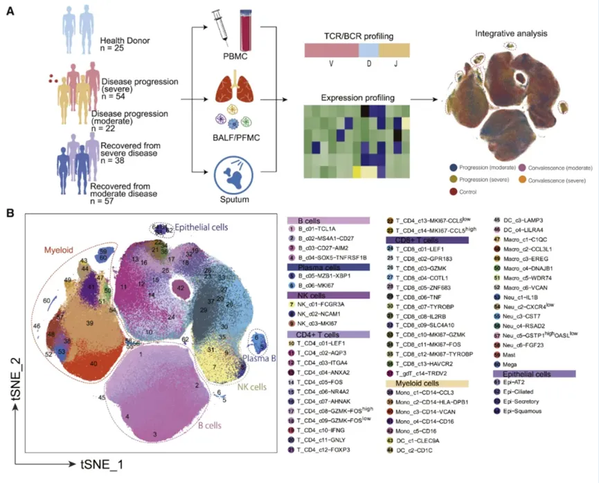
2019年冠状病毒（COVID-19）患者的免疫功能失调是影响症状和死亡率的原因，但对相关免疫细胞的详细了解尚不完整。作者对196名新冠肺炎患者和对照组的284份样本进行了单细胞RNA测序，并创建了一个包含146万个细胞的综合免疫环境。大数据集使他们能够确定不同的外周免疫亚型变化与不同的临床特征相关，包括年龄、性别、严重程度和新冠肺炎的疾病分期。在不同的上皮细胞和免疫细胞类型中发现了严重急性呼吸综合征冠状病毒2（SARSCoV-2）RNA，伴随着病毒阳性细胞内转录组学的显著变化。S100A8/A9的系统性上调，主要由外周血中的巨核细胞和单核细胞引起，可能导致严重患者中经常观察到的细胞因子风暴。这些数据为理解新冠肺炎的发病机制和制定有效的治疗策略提供了丰富的资源。
十七、题目：COVID-19 immune features revealed by a large-scale single-cell transcriptome atlas
IF：42.5
期刊：Cell
发表日期：2021.11
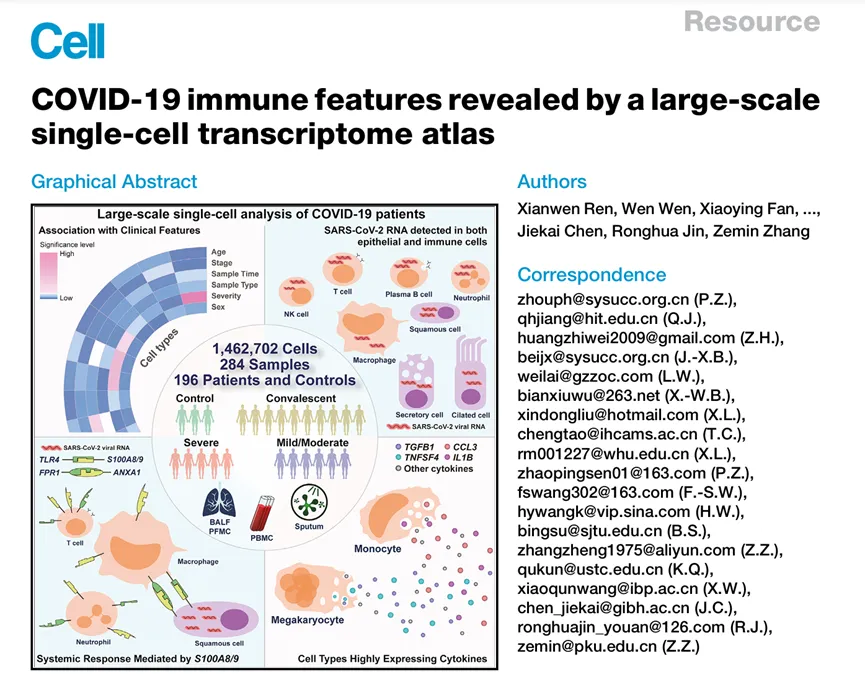
2019年冠状病毒（COVID-19）患者的免疫功能失调是影响症状和死亡率的原因，但对相关免疫细胞的详细了解尚不完整。作者对196名新冠肺炎患者和对照组的284份样本进行了单细胞RNA测序，并创建了一个包含146万个细胞的综合免疫环境。大数据集使他们能够确定不同的外周免疫亚型变化与不同的临床特征相关，包括年龄、性别、严重程度和新冠肺炎的疾病分期。在不同的上皮细胞和免疫细胞类型中发现了严重急性呼吸综合征冠状病毒2（SARSCoV-2）RNA，伴随着病毒阳性细胞内转录组学的显著变化。S100A8/A9的系统性上调，主要由外周血中的巨核细胞和单核细胞引起，可能导致严重患者中经常观察到的细胞因子风暴。这些数据为理解新冠肺炎的发病机制和制定有效的治疗策略提供了丰富的资源。
十八、题目：A pan-cancer single-cell transcriptional atlas of tumor infiltrating myeloid cells
IF：42.5
期刊：Cell
发表日期：2021.02
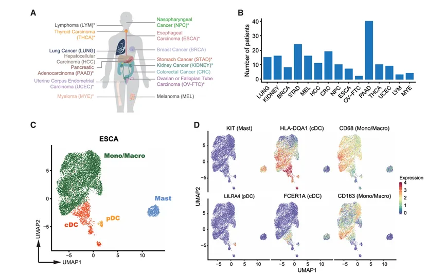
肿瘤浸润髓系细胞（TIMs）是肿瘤进展的关键调节因子，但它们在不同肿瘤中的基本特性相似性和差异性仍然不明确。此研究通过对来自 210 名患者的 15 种人类癌症类型的单个髓系细胞进行泛癌分析，揭示了不同癌症类型中 TIMs 的独特特征。研究发现，鼻咽癌中的肥大细胞与更好的预后相关，并表现出高比例的 TNF+/VEGFA+ 细胞的抗肿瘤表型。系统比较 cDC1 和 cDC2 衍生的 LAMP3+ cDCs 揭示了它们在转录因子和外部刺激方面的差异。此外，促血管生成的肿瘤相关巨噬细胞（TAMs）在不同癌症类型中表现出不同的表达谱，TIMs 的组成似乎与某些体细胞突变和基因表达特征相关。我们的结果为高度异质性的 TIMs 提供了一个系统的视角，并为未来的合理、靶向免疫治疗提供了新的途径。
十九、题目：Temporal single-cell tracing reveals clonal revival and expansion of precursor exhausted T cells during anti-PD-1 therapy in lung cancer
IF：42.5
期刊：Nature cancer
发表日期：2022.01
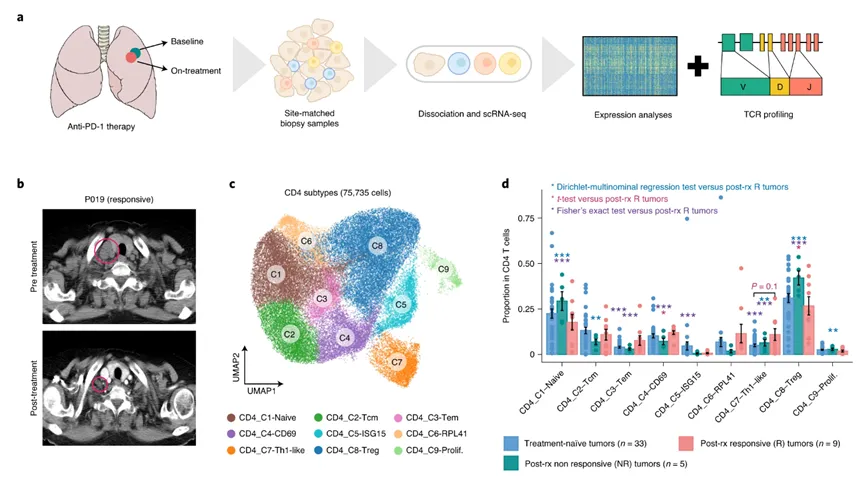
抗PD-1治疗在非小细胞肺癌（NSCLC）的临床治疗中获得了前所未有的成功，但其潜在机制尚未被完全揭示。在该文中，作者对36名接受PD-1治疗的NSCLC患者的47个肿瘤活体组织进行了时序性的单细胞测序和配对T细胞受体测序。他们观察到治疗后反应性肿瘤中前体衰竭T（Texp）细胞的水平增加，其特点是共抑制分子的低表达和GZMK的高表达（GZMK被证明与免疫细胞衰老密切相关）。相比之下，无反应性的肿瘤未能积累Texp细胞。他们的数据表明，Texp细胞不是来自于终末衰竭细胞(terminally exhausted cells)的重生；相反，它们是通过（1）局部扩张和（2）外周T细胞补充新的克隆型和原有的克隆型而积累的，这种现象被命名为克隆恢复(clonal revival)。作者的研究提供了对PD-1相关的治疗机制的见解，证明了克隆恢复和Texp细胞的扩张是改善NSCLC治疗的潜在步骤。
二十、题目：Reconstruction of cell spatial organization from single-cell RNA sequencing data based on ligand-receptor mediated self-assembly
IF：42.5
期刊：Cancer search
发表日期：2020.09
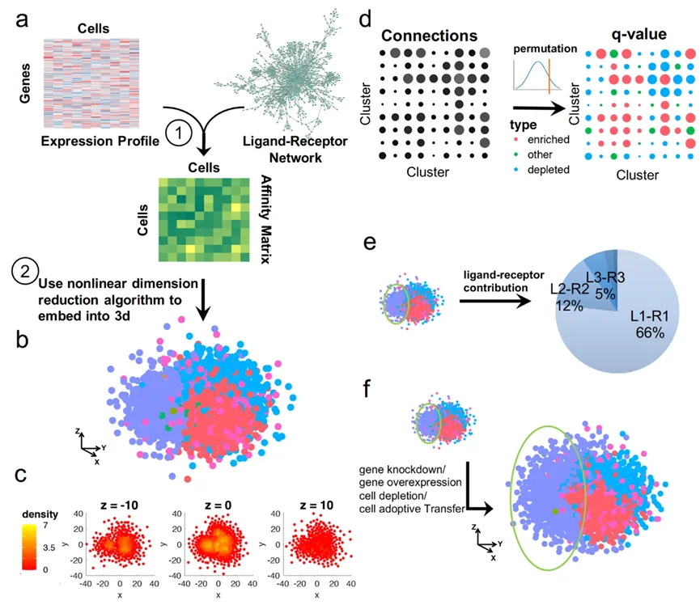
单细胞测序的应用领域广泛，带来了很多影响巨大的新发现。但是，常规的单细胞转录组测序（scRNA-seq）无法保留细胞的空间信息。近年来发展的空间转录组测序技术能够保留细胞的空间位置信息，为理解细胞在组织中的分布和功能提供了重要手段。然而，目前很多空间转录组测序方法对实验水平的要求又比较高，仅有少数实验室可以完成。最近的研究发现，空间组织的形成是由细胞间配体受体的相互作用完成自组装导致的，这暗示了细胞的空间结构与细胞内在的固有性质相关，也就是与基因表达水平相关。
基于此，作者提出借助单细胞测序数据和配体受体作用关系信息，可以从单细胞开始从头再组装细胞的空间关系，开发了CSOmap (Cellular Spatial Organization mapper)。本文使用了多种数据集进行验证，证明了CSOmap不仅可以基于单细胞测序数据从头组装单个细胞的空间结构，而且可以检验细胞间相互作用的显著性，并揭示在细胞-细胞相互作用中占主导地位的配体受体对，还可以在计算机模拟微扰条件对细胞空间结构的影响。

如何联系我们

 留一个领取资料、开箱即用的单细胞分析镜像的微信号[Biomamba_zhushou]，方便各位随时交流。同时我们也构建了交流群矩阵，欢迎大家入群讨论。
大家可以阅读完这几篇之后添加给生信入门初学者的小贴士
没有检索，就没有发言权
留一个领取资料、开箱即用的单细胞分析镜像的微信号[Biomamba_zhushou]，方便各位随时交流。同时我们也构建了交流群矩阵，欢迎大家入群讨论。
大家可以阅读完这几篇之后添加给生信入门初学者的小贴士
没有检索，就没有发言权
已有生信基地联系方式的同学无需重复添加

 您点的每个赞和在看，我都认真当成了喜欢
您点的每个赞和在看，我都认真当成了喜欢